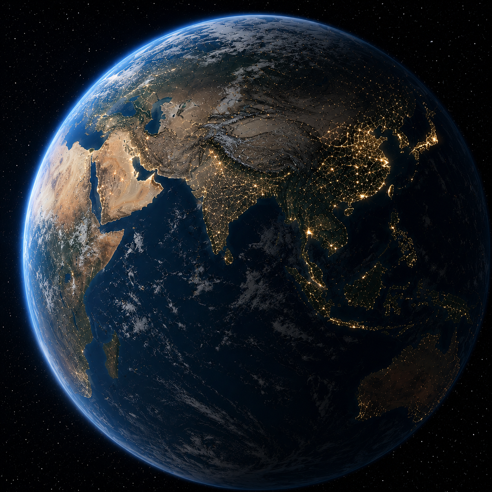

+8
From orbit, Earth appears as a fully networked planet rather than a distant, untouched sphere as it was often framed in 1977. Thousands of active satellites now surround it, forming a dense artificial ring used for communication, navigation, weather monitoring, and Earth observation. Compared to 1977, the planet is no longer viewed only as a natural system but also as an actively managed one, constantly measured and updated in real time. Climate change is now visible at this scale through shrinking ice sheets, shifting weather patterns, and large-scale environmental change captured continuously by satellite imaging—turning the Earth itself into something that is both observed and increasingly altered by human activity.